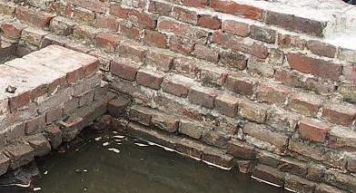
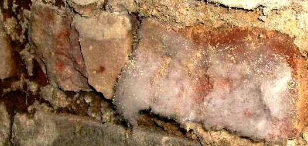
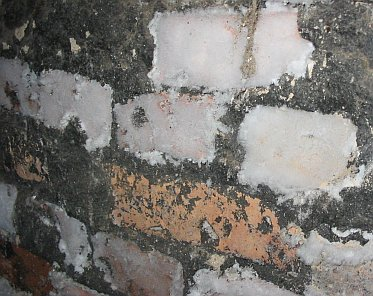
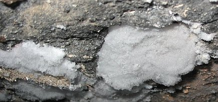

Einige Bilder von in der Badewanne eingesumpften Mauerkörpern der "Trockenlege-Profis" auf der Denkmalmesse 2004, Leipzig:

Vorsicht: Nicht überall, wo "AUFSTEIGENDE FEUCHTIGKEIT" draufsteht, ist auch aufsteigende Feuchte drin, selbst nicht nach 5
Tagen Wasserbad!

Unglaublich, mit wie wenig Raffinesse dem arglosen Denkmalpfleger, dem heiligen Kirchbauamt, dem schlauen Baubeamten,
aber auch dem geschmackssicheren Architekten und sogar dem klammen Bauherrn "Trockenlegung" aufgeschwätzt
werden kann. Man prüfe nur mal die Referenzen des horizontalisolierenden + sanierverputzenden Gewerbes.

Auch dem Mitwettbewerber gelingt es nicht, die 5-Tage-Feuchte über die erste Fuge hinaus aufsteigen zu lassen.
Da kann er bis zum jüngsten Tag drauf warten und stündlich seine Verdunstungsfeuchte in der Wanne
nachgießen.
Im schönen Hamburg stimmen die Wassermauern / Kaimauern mit der Laborwanne überein. Es ist natürlich allerfeinst gesponnenes Seemannsgarn, wenn neben Seejungfrauen und Tiefseemonstern Hamburger "Bau-Experten" von "Aufsteigender Feuchte" fabulieren, wo nur Wellengang und Tidenhub das Salzfäckalbrackwasser in Elbe und Alster an die (wg. mangelhaft vermörtelter Fuge und entfeuchtungsstauenden Hydrophobierung oft sinterverschmutzten) Fundament- und Kaisockel spülen:
 +
+ +
+ +
+ +
+
Im zumindest für Oldenburger noch wesentlichen schöneren Oldenburg belegt der archäologische Grabungsbefund einer städtischen Baustelle vor dem Kaufhof, daß es im 17. Jahrhundert noch keine Horizontalisolierungsfans gab. Das gut erhaltene und selbstverständlich mit hydraulefreiem reinem Luftkalkmörtel gemauerte Backsteinmauerwerk zeigt weder Horizontalisolierung noch aufsteigende Feuchte, sondern über der Waterkant schöne trockene Mauersteine und Fugen - obwohl seit anno dunnemals im nassen Grundwasser stehend (Bildquelle: Architekt Richard Lindemann, ein aufmerksamer Besucher meiner Webseite - Dankeschön!):

Abgesoffene Grundmauern, Befund: Mittelalterliches Mauerwerk, perfekt in erstklassigen und porenreichen Kalkmörtel gelegte Backsteine (kein porosierter Ziegelschwamm!), keinerlei aufsteigende Feuchtigkeit! Bitte erklären Sie mal den Befund, meine hoch verehrten Herrlichkeiten und Dämlichkeiten der weltweit sägenden, verpressenden, bohrlochisierenden, injizierenden, osmotisierenden und kaschierenden Trockenlegungsindustrie / Bauchemie! Könnsenet? Ja, da bleibt nicht nur der Schnabel trocken ...


Nein, die unfreiwillig Angekommenen sind dann auch noch mal fleißig von den sich möglicherweise nicht immer alle 24 Stunden täglich als liebevolle Befreier aufspielenden Fremden und ortskundigen sowie unmenschenkundigen einstigen Emigranten und deren willigen Helfershelfern urdeutschen Verbrechergeblüts wegrationalisiert worden, zusammen mit den deutschen Kriegsgefangenen in alliiertem Gewahrsam und der den Bombenterror gerade mal so überlebenden häßlichen Deutschen und noch häßlicheren in hitleristische Sippenhaftung genommenen Österreichern, was ja in den Augen der Ausländer sowieso irgendwie das selbe ist. Etwa eineinhalb Millionen in den "westlichen" Gefangenenlagern (in den Rheinwiesen-Lagern bei Bad Kreuznach war auch mein mit knapp über 40 Kilogramm entlassener Vater drin, der wußte allerlei unvergeßlich Unglaubliches vom Zwangsfasten und dessen schauerlichen Begleiterscheinungen rund um Nilpferdpeitschen und Stockschlägen seitens rachedurstiger Augewanderter, die nun in alliierter Uniform ihre einstigen Volksgenossen zu beglücken wußten, zu erzählen), und von den anderen auf ewig schuldbeladenen Zivilisten und selbstdranschuldigen Vertriebenen dann immerhinque etwa 5,7 Millionen, meist wieder mal die Kleinkinder und Alten von Mai 1945 bis 1949. Macht Summasummarum ca. 13,2 Verhungerte. Kaufmann, Hooton, Morgenthau und deren lieben Ausrottungsfreunden harvardscher Prägung sei ewig Dank für diesen Aufräumprozeß unter dem ganz und gar überflüssigen, nein, die so tugendhaften Nachbarvölker geradezu störenden und belästigenden und sogar gefährdenden deutschen Menschendreck. In einer Rezension über die neueste Auflage des Auklärungsschockers von Claus Nordbruch: "Der deutsche Aderlaß - Alliierte Kriegspolitik gegen Deutschland nach 1945", Grabert 2012, weiß der Rezensent E.K. im Euro-Kurier 6-7/2012 über Nordbruchs Belegführung zu berichten, daß